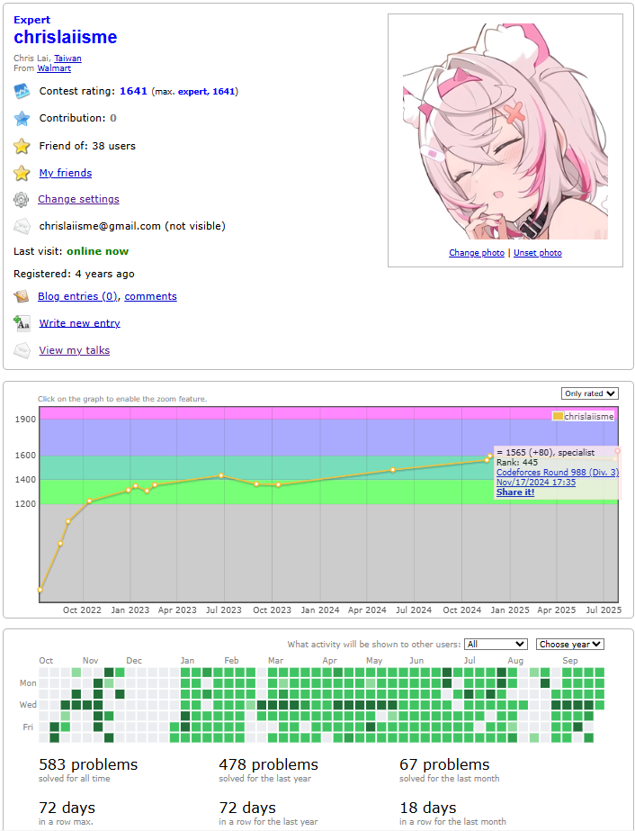
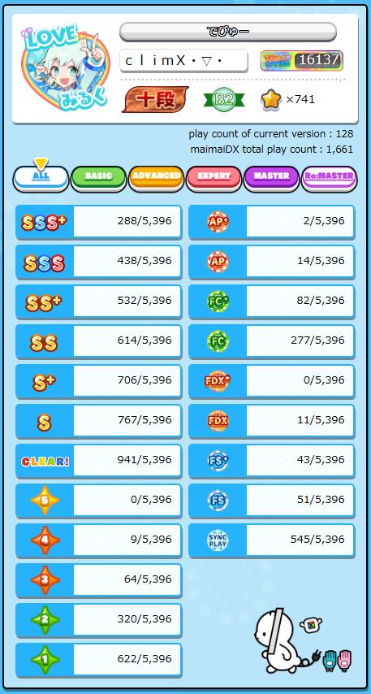

My Hobbies
Programming
-
Competitive Programming
---- Started participating in various programming contests since high school
-
Online Problem Solving
---- Mostly practicing on Codeforces / CSES, currently doing the "One Problem per Day 2025 Challenge" (269-day streak)
Music
-
Listening to Music
---- Open to songs of all kinds of languages and genres, e.g. Japanese EDM, Western EDM, Taiwanese songs, rap...
-
Electronic Music Production
---- Currently learning EDM production with FL Studio, aiming for the Happy Hardcore style
Games
-
Taiko no Tatsujin
---- Playing since childhood, even made my own drumsticks, highest rank: Rainbow Ver. 2024 7th Dan
-
MaiMai DX
---- Started around junior high, current rating: 16137, my main rhythm game now
-
Hollow Knight: Silksong
---- Played for 49 hours so far, just reached Act 3, hoping to reach 100% this semester
Others
-
Random Walking
---- Just wandering around places aimlessly, sometimes in Hsinchu or Zhongli; once walked from Hsinchu Station to Sanxingqiao out of boredom
-
Staying Up All Night
---- The hardcore type where I end up awake the entire next day, recent ones include 9/27–9/28 and 9/29–9/30
-
Wearing Anime Graphic Tees
---- I own at least 5 anime-print T-shirts, enough to wear a different one every day

